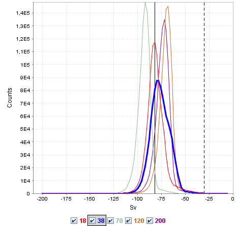

This view shows the probability density function of Sv values in the echogram.
The distribution is calculated over all active regions, and one curve for each frequency. The thickest line indicates the active frequency. Vertical lines indicate the threshold values in the colorbar.
